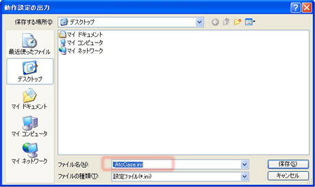
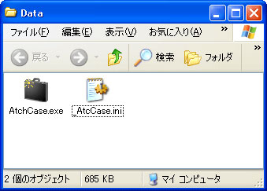
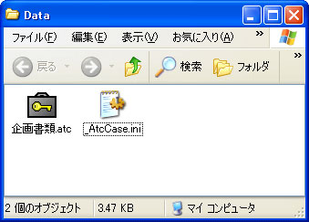
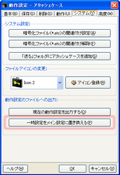

アタッシェケースでは、レジストリとは別に.INIファイルとして設定を保存することができます。 また、作成したその.INIファイルを個別に読み込むことで、動作設定を起動時に切り替えることが可能です。
暗号化ファイルを各所の異なるPCで復号しなくてはならない場合や、 アタッシェケースのインストールされていない環境へUSBフラッシュメモリなどで持ち込む場合など、 常に自分好みの設定でアタッシェケースを起動したい方には便利な機能です。
.INIファイル形式を選択して、「_AtcCase.ini」というファイル名で出力します。
ここに現在の設定内容がすべて書き出されます。↓

上記の順番で「_AtcCase.ini」ファイルを探索し、見つかったときに読み込まれますので、 複数箇所にINIファイルが置かれると、予期しない設定動作になることがあります。
通常、何もせずに（設定のINIファイルをどこにも置かずに）アタッシェケースを起動すると、 レジストリにある設定内容で起動します。
アタッシェケース本体のある場所に.INIファイルを置きます。↓

あるいは処理するファイル/または暗号化ファイルの横に.INIファイルを置きます。↓

後者の場合、ファイル/暗号化ファイルは、直接アタッシェケースアイコンにドラッグ＆ドロップするか、 関連付け起動する必要があります（起動してからファイルをドロップしても、 そのディレクトリにある.INIファイルを参照しないので注意が必要です）。
そうすることで、一時的に.INIファイルの内容で動作設定が行われ、アタッシェケースは起動します。
なお、「_AtcCase.ini」のファイル名は固定です。 名前は変更しないでください。アタッシェケースは、設定ファイルを中身ではなく、そのファイル名で判断し読み込んでいます。

そうすることで、.INIファイルの内容がレジストリへ読み込まれ、メイン設定として上書きされます。
Created with the Personal Edition of HelpNDoc: Write EPub books for the iPad